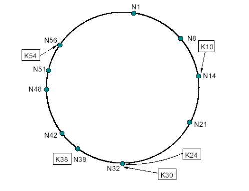

CHORD
Architecture
The CHORD protocol uses SHA-1 as consistent hash function to assin a m-bit identifier to each node and each key.
The m is an integer which should be chosen big enough to make the probability that two nodes or two keys receive the same identifier negligible.
The Hash function calculates the key identifier by hashing the key, and the node identifier by hashing the IP Address of the node.
The key and the node identifiers are arranged on an identifier circle of size 2^m called the CHORD ring.
The identifiers on the CHORD ring are numbered from 0 to 2^m-1. A key is assigned to a node whose identifier is equal to or greater than the identifier of the key.
The node is called the successor node of k, and is the first node clockwise from k on the circle.

This figure shows a CHORD ring with m = 6, 10 nodes and 5 keys. Sice the successor of K10 is N14, K10 is located at N14.
Library
In this tutorial, we are going to explain how to use the C# library to have an up and running CHORD server.
Open a command prompt and create a console application.
mkdir QuickStart
cd QuickStart
mkdir src
cd src
dotnet new console -n ChordServer
Install the Nuget package FaasNet.DHT.Chord.Client and FaasNet.DHT.Chord.Core.
cd ChordServer
dotnet add package FaasNet.DHT.Chord.Client
dotnet add package FaasNet.DHT.Chord.Core
Add the console application into the Visual Studio Solution.
cd ../..
dotnet new sln -n QuickStart
dotnet sln add ./src/ChordServer/ChordServer.csproj
Open the Visual Studio Solution and edit the Program.cs file.
Add a new procedure AddRootPeer, it will be used to start the CHORD ring.
private static async void AddRootPeer()
{
var rootNode = PeerHostFactory.NewStructured(o =>
{
o.Port = 51;
o.Url = "localhost";
}).UseTCPTransport().AddDHTChordProtocol().BuildWithDI();
_peers.Add(rootNode);
await rootNode.Item1.Start();
using (var firstClient = new TCPChordClient("localhost", 51))
{
firstClient.Create(4);
}
}
Add a new procedure AddPeer(int port), it will be used to add a node into the ring.
private static async void AddPeer(int port)
{
var node = PeerHostFactory.NewStructured(o =>
{
o.Port = port;
o.Url = "localhost";
}).UseTCPTransport().AddDHTChordProtocol().BuildWithDI();
await node.Item1.Start();
using (var secondClient = new TCPChordClient("localhost", port))
{
secondClient.Join("localhost", 51);
}
}
Add a new procedure AddKey(long key, string value), it will be used to persist a Key and its Value into the ring.
private static void AddKey(long key, string value)
{
using (var chordClient = new TCPChordClient("localhost", 51))
{
chordClient.AddKey(key, value);
}
}
Add a new procedure GetKey(long key), it will be used to get the value of the key from the ring.
private static string GetKey(long key)
{
using(var chordClient = new TCPChordClient("localhost", 51))
{
return chordClient.GetKey(key);
}
}
Add the following code to add two peers into the ring, publish a key with its value and finally display the value of the key.
AddRootPeer();
Console.WriteLine("Press enter to add a Peer");
Console.ReadLine();
AddPeer(57);
Console.WriteLine("Press enter to add a Peer");
Console.ReadLine();
AddPeer(58);
Console.WriteLine("Press enter to add a key");
Console.ReadLine();
AddKey(8, "Hello");
Console.WriteLine("Press enter to display the key");
Console.ReadLine();
var key = GetKey(8);
Console.WriteLine($"Key 8 is stored with the value {key}");